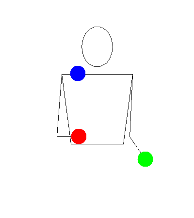
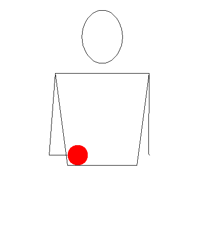
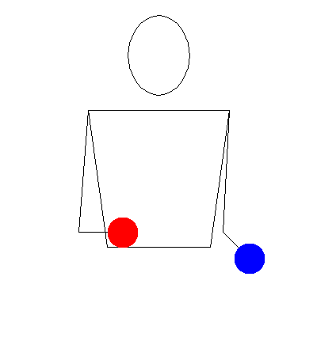

Cascade


Video provided by Nathan Gehr
Description
Tutorial
Step 1

Step 2

Step 3
Video provided by Nathan Gehr
Tips
- It can be helpful to think of trading the ball in the air for the one in your hand.
- If you have trouble at a step, it can be helpful to practice with the previous step some more. However, this does take time and practice so you do have to move on to the next step eventually.
- For some, practicing the steps on the ground can help with learning the pattern.